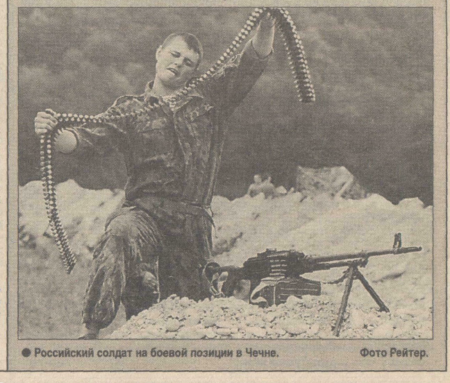

|
|
|
|

|
|
|
|
|
|
|
||||||||
|
||||||||||||||||||
|
|
Таков универсальный «закон обратных связей» |
МИНИ «Петля обратной связи» ГАЗЕТА
Орган правозащитно - просветительской группы «Обратная связь»
Предновогодний выпуск - декабрь 2005 года – Москва
События 2005 года подтвердили наши самые пессимистические предположения: война против Чечни, в наказание за стремление чеченцев разорвать порочный круг насильственной связки с Россией, неуклонно перерастает в войну со всеми народами Северного Кавказа. Если в начале года в Чечне за неделю от оружия погибали от 20 до 50 человек, то теперь всё больше терактов и нападений отмечаются уже в соседних республиках - Дагестане, Ингушетии и Кабардино-Балкарии. Ещё в начале июля подал в отставку начальник УВД Дагестана, прямо заявив, что органы внутренних дел не в состоянии справиться с вооружённой оппозицией. Набирает силу и вооружённое противостояние оппозиции с российской и местной властью в Карачаево-Черкесии и Кабардино-Балкарии. Осенью 2005 года и сам представитель президента России Д. Козак заговорил о том, что Россия практически теряет контроль над всем Северным Кавказом.
Рост радикализма среди кавказских народов происходит не на пустом месте. В России выходцы с Кавказа (русские – в том числе) подвергаются унижениям, бессовестным поборам, а на улицах - тяжёлым избиениям и убийствам. В самих республиках Северного Кавказа сотни людей, как в пору сталинских репрессий, бесследно исчезают, подвергаются жесточайшим истязаниям, их лишают жизни, а тела выдают родственникам в качестве убитых боевиков. Молодёжь находится между молотом и наковальней и каждый день решает дилемму: вступить в банды Кадырова или Яшуркаева или уйти в лес к партизанам.
Всё, что происходит сегодня - следствие системной ошибки. Чеченцев надо было отпустить в начале 90-х. Тогда бы мы не потеряли возможность протянуть газопровод через территорию Чечни и имели бы гостеприимный народ, целительный отдых в горах и определённый доход в бюджете. Вместо этого российский народ получил войну на срок почти в три раза превышающий срок Великой отечественной войны. И война эта только расползается.
Почему это стало возможным?
"Не было бы войны в Чечне, если бы в целом по стране народ России этого не хотел. Но он пожелал: - то ли от незрелого ума, то ли от своего властного деспотического характера, то ли от недостатка грамотной просветительской информации, которой в России всегда было маловато.
Куда нам деться от своего властного волеизъявления? Ведь оно от каждого из нас изымается, сбрасывается в общую сумму, и, в конечном итоге, проявляется в виде непредвиденных проявлений своей мощи. И была бы сила, а за исполнителями далеко ходить не надо. Своих - хоть отбавляй. Что делать в этих случаях?.
Выходит, мы бессильны против самих себя? <…> Вполне естественно, что властолюбивый отсталый и зелёный мозг будет голосовать, иногда того не осознавая, за империю, войну и рабство. Человек на словах может и не хотеть этой войны, может казаться добрым и справедливым, но если снять с него информационный показатель по двум, трём или четырём десяткам основных пунктов земного общежития, то окажется, что он не такая уж безобидная добродетель" (из высказывания Валентины Павловны Лавровой, лидера партии «Полярная Звезда», 1996 год).
Трудно не согласиться с этими мудрыми словами…
Прислушайтесь к нашим известным политикам, - от СПС до КПРФ! Все они, так или иначе, оправдывают имперскую политику на Кавказе. Даже те, которые числят себя в демократическом лагере, - Григорий Явлинский, Борис Немцов, Владимир Лысенко, Элла Памфилова, Сергей Ковалёв и многие, многие другие, - всегда оговариваются, что хотя войну против Чечни начинать и не надо было, но всё же и отпускать её не следует.
При этом, находится масса завуалированных под благопристойные «причин» отстаивать имперскую позицию: и что Чечня, дескать, не сможет без нас выжить, так как у неё нет никаких ресурсов, и что если бы не мы, то тогда её забрала бы к себе Турция, и что мы в Чечне, оказывается, спасаем чеченский народ от его бандитов, и тому подобный демагогический бред.
А ведь истина лежит рядом – большинство россиян были глубоко обижены тем, что как только появилась возможность, ВСЕ «союзные» республики, включая и ближайших «сестер» - Белоруссию и Украину, рванулись от России к независимости! Как она не охаживала дубинками (Казахстан) или саперными лопатками (Грузия), не душила экономическими блокадами (Литва) бывшие свои колонии (15 бывших социалистических республик), они посчитали, что на воле дышится как-то легче. Вот и Чечня пожелала, воспользовавшись моментом, стать независимой. Но не тут-то было. Россияне решили, что если нельзя силой удержать 15 более или менее больших народов, то на один «народишко» с населением не более 2-х миллионов человек у них силы найдутся. Борис Ельцин буквально «с губ» считал этот бред спящего народного разума и решил дать россиянам эту пустышку - даром, что не знал чем младенца занять, как отвлечь его от печальных мыслей о потере ощущения приобщённости к былому державному величию и могуществу. И хотя в своей внутренней политике Ельцин делал практически то же самое, что и Дудаев, он решил следовать принципу: «Что позволено Цезарю, не позволено его быку». Все средства давления (и лукавые обещания, и подкуп его чиновников, и подсылка убийц) были применены к Дудаеву (боевому генералу, сыну репрессированного народа, кумиру огромного числа чеченцев) с тем, чтобы он отказался от своей цели – добиться суверенитета Ичкерии. Не получилось, так как и не могло получиться. Тогда ельцинский Кремль приступил к экономической блокаде Ичкерии. Обрыв экономических связей должен был, по замыслу кремлёвских стратегов, вынудить народ Чечни сбросить их вождя. Но эта подлая мера вызвала, скорее, чувство раздражения у населения и поиск им любых, в том числе и криминальных, способов выживания. Что касается русско-культурного населения, то оно было отдано Кремлём в жертву великодержавной колониальной политики. Русских не поддерживали ни дипломатически, ни экономически, ни социально, полагая, что их плачевное положение поможет оправдать в глазах большинства российского населения нападение на Чечню в качестве освободительной меры. Лучше бы жители Чечни, поверившие в «освободительную» миссию российских войск, вовремя сообразили, что в геополитических раскладках Кремля живой человек рассматривается только как расходный материал. Но этого чуда не произошло.
Десятки тысяч россиян погибли в домах и на улицах Грозного и других населённых пунктов Ичкерии от снарядов, ракет, бомб и иной «братской помощи» российских военных.
Нам же остаётся констатировать, что новый виток активного безумия (если Путин не придет в чувство от эйфории свалившегося на него всевластия) уже на пороге. Кто станет его новой жертвой: все поголовно кавказцы или украинцы и при любом раскладе – сотни тысяч простых российских граждан?
Эти витки смерти и поругания человеческих прав будут накручиваться в России до тех пор, пока она или не взорвется под внутренним напряжением открытой (а то и глубоко спрятанной) собственной ненависти, или её народ в корне не перестроит свою национальную политику.
Одним из важнейших показателей этих животворных перемен я вижу в предоставлении независимости Ичкерии. Кто не решается потерять безнадёжно больной палец, теряет жизнь… Бродский Дмитрий
Зачем на земле множат войны страдания?
Наша общая боль – Чечня»
|
Какому богу на закланье Л. Егорова.10 ноября 1995 года |
Кто сеет рознь и холода вражду, В жестокой бойне ощутив блаженство? Кто братской кровью утоляет жажду, Питаясь горьким ядом изуверства? Придет пора – ответите с лихвой. И знаю я: пощады вам не будет. За смерть детей и варварский разбой На вечное презренье вас осудят. Л.Егорова. 7 декабря 1994 года |
(Газета «Окуловский вестник», г. Окуловка, №8(10598), от 31 января 1996 года, с. 4
Материалы группы «Обратная связь» и других групп Комитета антивоенных действий Вы можете получать по четвергам во время пикета «Против войны в Чечне, военных преступлений и терроризма» с 17.30 до 19.00 на площадке перед Новопушкинским сквером ( м.Пушкинская на противоположной стороне от памятника А.С.Пушкину.). Более полная информация о потерях и жертвах войны находится на сайте www.voinenet.ru
Желаем Вам мира в сердце и мирного неба над головой!
Пролетает по ночам ворон
Он бессонницы моей кормчий!
Если даже я ору ором -
Не становится мой ор громче.
Он едва за пять шагов слышен
Но и это говорят слишком.
Но и это - словно дар свыше -
Быть на целых пять шагов
СЛЫШНЫМ!
Александр ГАЛИЧ
Издательская группа: «МНОБ-лист» Тираж: 100 экз. E-mail : miplibrary@mtu-net.ru
Сайт группы «ОС»: feedbackgroup.narod.ru На нашем сайте вы можете познакомиться с научными (философскими, психологическими, социологическими, политологическими) и публицистическими работами, касающимися межнациональных и других социальных отношений